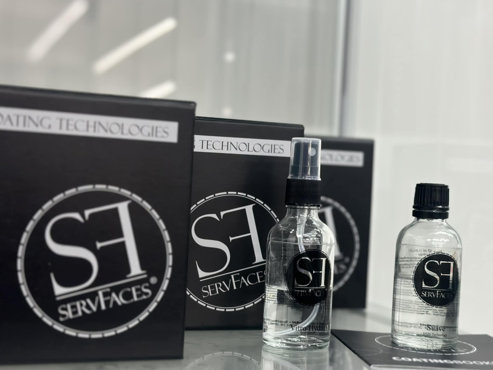
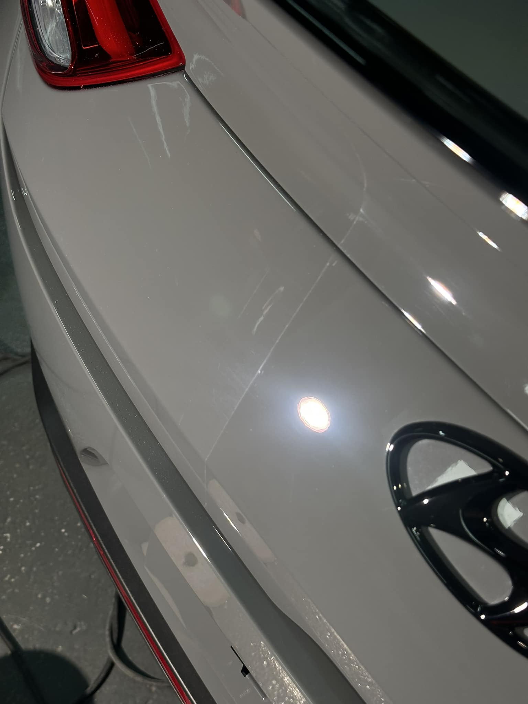
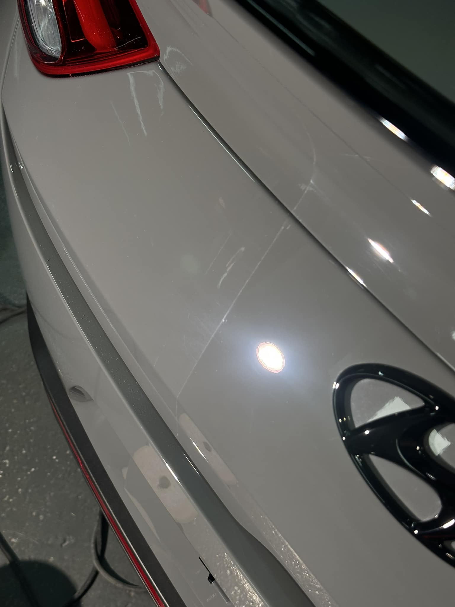
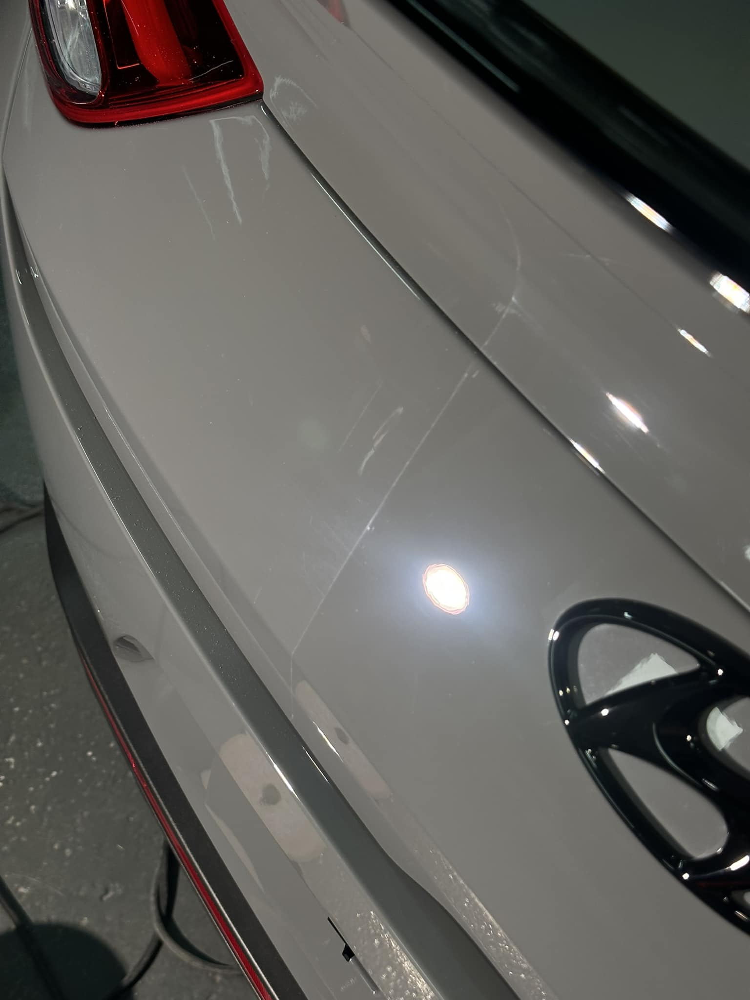
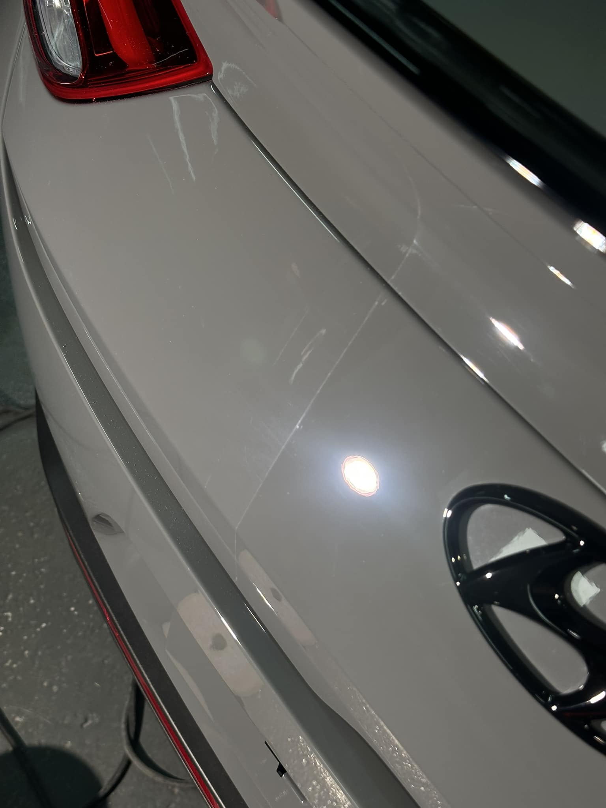

 


Keramika má vysokú povrchovú tvrdosť a skvelé hydrofóbne vlastnosti, čo znamená, že odpudzuje vodu a ľad a zabraňuje priľnutiu nečistôt na lak automobilu akými je prach, posypová soľ či špina. Vďaka pevnej väzbe medzi keramickými časticami a farbou vydrží náter pri správnom umývaní vozidla v rozmedzí od 2 do 5 rokov, podľa danej ochrany.
